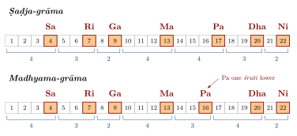
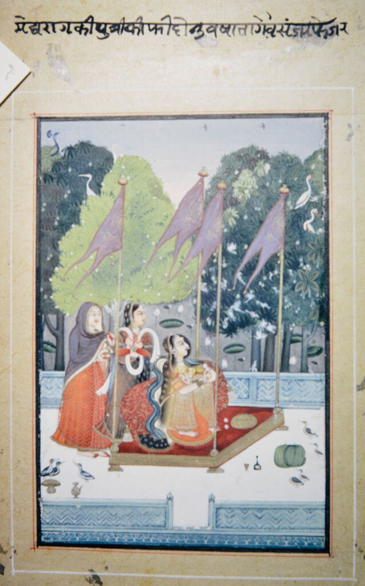
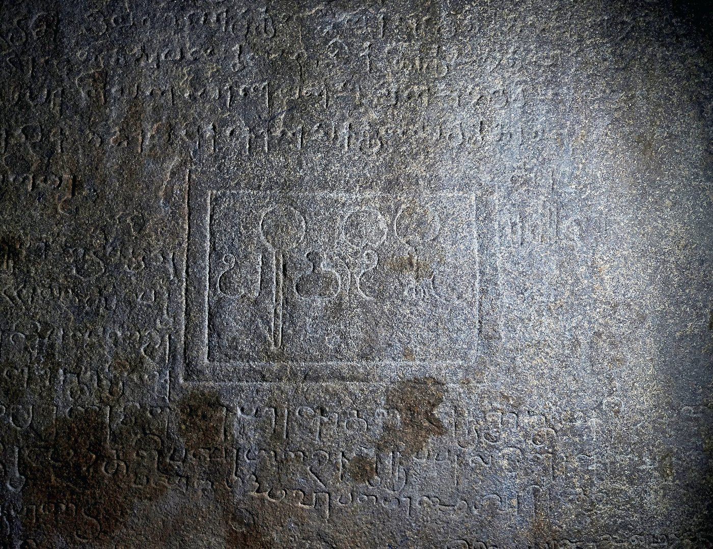

Chapter 4: Svara and Rāga¶
The rāga is the central concept of the art music of South Asia, in both its northern (Hindustani) and southern (Karnatak) forms. A rāga is not simply a scale. It is a melodic entity with a recognisable personality: a set of notes with particular relations of emphasis, characteristic phrases and turns of melody, ornaments proper to particular notes, typical ways of ascending and descending, and associations of mood, season or time of day. Musicians speak of “singing a rāga” as one might speak of portraying a person; a composition is “in” a rāga, and an improvisation unfolds it. How such an entity can be described at all — by its notes (svara), the microtonal intervals (śruti) between them and the ornaments (gamaka) that carry them, by the history through which the concept took shape, by the schemes that classify it and the times and feelings attached to it — is the question that runs through the sections below. The Hindustani and Karnatak traditions are described in Chapters 7 and 8, and rhythm in Chapter 5.
4.1 The Word and the Idea¶
The word rāga comes from the root rañj, “to colour, to tinge, to delight”, and in ordinary Sanskrit means colour, passion or affection. Its use for a melodic type is first clearly attested in Mataṅga’s Bṛhaddeśī, a treatise on the “regional” (deśī) music of its time, composed in the second half of the first millennium CE (dates proposed range from about the sixth to the ninth century). Mataṅga’s definition, much quoted by later writers, plays on the root:
Mataṅga, Bṛhaddeśī 281 (Trivandrum edition)
yo ’sau dhvaniviśeṣas tu svaravarṇavibhūṣitaḥ
rañjako janacittānāṃ sa ca rāga udāhṛtaḥ
“That particular sound, adorned with notes and melodic movements, which colours the minds of people, is called rāga.” Later writers quote the verse with the ending sa rāgaḥ kathito budhaiḥ, “is called rāga by the wise”.
The definition stresses two things: a rāga is a specific configuration of notes and movements (varṇa, ascending, descending, stationary and mixed melodic motion), and its purpose is to please or move the listener. Both ideas remain central. A modern musician would add that a rāga is learnt from compositions and from teachers, not from a definition, and that two rāgas with the same notes may be quite different because they use those notes in different ways (Widdess 1995; Jairazbhoy 1971).
4.2 The Notes¶
4.2.1 The seven svaras¶
Indian music names seven notes (saptasvara): ṣaḍja (Sa), ṛṣabha (Ri or Re), gāndhāra (Ga), madhyama (Ma), pañcama (Pa), dhaivata (Dha) and niṣāda (Ni). The syllables sa, ri, ga, ma, pa, dha, ni are used for solmisation (sargam in the north, svara in the south), and in modern practice Sa is the tonic, fixed at whatever pitch suits the singer or instrument and sounded continuously by the drone. The names are old and partly obscure. Later texts give traditional explanations — ṣaḍja is “born of six”, because it is produced with the help of the nose, throat, chest, palate, tongue and teeth — and associate each note with the cry of an animal or bird, from the peacock for Sa to the elephant for Ni. These associations are part of the tradition’s own imagery; they are not acoustic descriptions.
Sa and Pa are fixed (acala): they have only one position. The other five notes are “movable” (cala) and have two or more positions. In modern Hindustani terminology Re, Ga, Dha and Ni each have a natural (śuddha) and a flat (komal) form and Ma a natural and a sharp (tīvra) form, giving twelve positions in the octave. Karnatak theory uses the same twelve positions but names them differently, with three names each for the positions of Ri, Ga, Dha and Ni; because some positions have two names (the second Ri and the first Ga are the same pitch, as are the third Ri and the second Ga), the twelve positions (svarasthāna) carry sixteen names. The dual naming is what allows the 72-mela scheme described in Chapter 8 (Figure 8.2).
4.2.2 Śruti¶
Ancient theory measured the octave not in twelve semitones but in twenty-two śrutis, the smallest intervals “that can be heard”. The Nāṭyaśāstra and the Dattilam distribute them among the notes of the ṣaḍja-grāma in the proportions 4, 3, 2, 4, 4, 3, 2: Sa stands on the fourth śruti, Ri three above it, Ga two above Ri, and so on (Figure 4.1) (Nijenhuis 1970; Rowell 1992).

The śrutis are not equal steps. The ancient texts use them as a means of counting intervals of three sizes — large (four śrutis), middle (three) and small (two) — and the experiment described in the Nāṭyaśāstra, in which two vīṇās are tuned and one is lowered step by step, shows how the twenty-two steps are counted and is usually interpreted as describing intervals of the kind found in just intonation; it does not divide the octave into twenty-two equal parts. Dividing 1,200 cents by twenty-two gives an average of about 54.5 cents, but this is only an average; descriptions of śruti as “the twenty-second root of two” misrepresent the theory.
The values of the śrutis were much debated by twentieth-century theorists, who proposed reconstructions based on just intonation, on cycles of fifths and on other principles. Measurements of actual performance, made by ethnomusicologists since the 1960s, have shown that intonation in both traditions is flexible: the pitch of a note depends on the rāga, the phrase and the ornament, so that the flat Ga of one rāga may differ audibly from the flat Ga of another (Jairazbhoy 1971). The twenty-two śrutis are best understood as a theoretical framework from the past rather than as a fixed set of pitches used today.
4.2.3 Grāma and mūrchanā¶
The Nāṭyaśāstra derives its melodies from two parent scales (grāma). The ṣaḍja-grāma has the intervals given above; the madhyama-grāma differs in that Pa is one śruti lower. Later writers mention a third, the gāndhāra-grāma, which they say was current only in heaven and not on earth; the Nāṭyaśāstra itself names only two. Each grāma yields seven modal series (mūrchanā) by starting on each of its notes in turn. From these the text derives its eighteen jātis, melodic types defined by a set of characteristics: the initial note (graha), the predominant note (aṃśa), the upper and lower limits (tāra, mandra), the final and penultimate cadential notes (nyāsa, apanyāsa), the notes used sparingly or frequently (alpatva, bahutva), and the forms with six or five notes (ṣāḍava, auḍuva). Seven jātis are “pure”, named after the seven notes, and eleven are “mixed” (Rowell 1992; Widdess 1995). Several of these characteristics, especially the predominant note and the cadential notes, reappear in the later concept of rāga.
4.3 From Vedic Chant to Rāga: A History¶
4.3.1 Vedic chant¶
The oldest Indian music that survives in continuous practice is the chanting of the Vedas. The hymns of the Ṛgveda (c. 1500–1200 BCE for the core) are recited with three pitch accents: the raised (udātta), the unraised (anudātta) and the “sounded” (svarita), a falling or compound accent that follows a raised syllable. The svarita is not a “middle” note between the other two; it is a movement of pitch. The Sāmaveda sets Ṛgvedic verses to melodies (sāman) that use a wider range of notes, transmitted orally in several schools and recorded in manuscripts with numerical and syllabic notations. The relation between Sāmavedic chant and the later art music is a matter of debate. The later tradition insisted on the connection, and the Nāṭyaśāstra says that song was taken from the Sāmaveda; but the scales and genres of the theatre music it describes were already different from those of the chant. Vedic chanting was inscribed by UNESCO on its list of the Intangible Cultural Heritage of Humanity (proclaimed 2003).
4.3.2 The music of the Nāṭyaśāstra and Dattila¶
The Nāṭyaśāstra (c. 200 BCE–200 CE) and the slightly later Dattilam describe a highly systematised art music, the gāndharva, used in ritual and in the preliminaries of the theatre, alongside the songs of the plays themselves (dhruvā). Its theory — śruti, grāma, mūrchanā, jāti — was transmitted in the texts for more than a thousand years after the music it described had ceased to be performed (Nijenhuis 1970; Lath 1978).
4.3.3 Mataṅga and the deśī rāgas¶
Mataṅga’s Bṛhaddeśī is the first surviving text to give a systematic account of rāgas. It names and describes melodic types called grāma-rāgas, derived from the jātis, and also regional types (bhāṣā, vibhāṣā and others), and it treats deśī music, the music of the regions and of ordinary people, as worthy of systematic description (Widdess 1995). The distinction between mārga, the “path” of the ancient, canonical music, and deśī, the music of the regions, remained fundamental to Indian music theory, and the history of Indian music can be read as a series of “regional” musics that were in turn codified and made classical.
4.3.4 The Saṅgītaratnākara¶
For the history of rāga, the decisive text after Mataṅga is Śārṅgadeva’s Saṅgītaratnākara (first half of the thirteenth century), whose author, contents and commentators are described in Section 6.5. It names 264 rāgas, sorting them into the categories inherited from Mataṅga and separating those “famous in former times” from those “famous now”, and it became the common authority of north and south. Yet by the time of its commentators the music it described had already changed, and much of its rāga theory could no longer be related precisely to practice. Its opening chapter, which describes the body as the seat of sound and relates the production of musical sound to the vital breath, the centres (cakra) and channels of yogic physiology and the doctrine of nāda, belongs to the religious and philosophical frame of the work, not to its musical analysis.
4.3.5 Divergence of north and south¶
From the fourteenth century the music of the north and the south developed in different directions, though they continued to share much theory and a common vocabulary. In the north, music at the courts of the Delhi sultans and their successors absorbed Persian and Central Asian musicians, instruments and genres; new rāga names appeared, some of them Persian or Arabic in origin (Hijāz, Zīlaf and probably Yaman), and theorists from the sixteenth century onwards wrote in both Sanskrit and Persian to reconcile older theory with new practice (Chapter 7). In the south, the theorists of Vijayanagara and its successor states classified rāgas under parent scales (mela), a line of thought that led from the treatises of the sixteenth and seventeenth centuries (Section 6.6) to the scheme of seventy-two melakartas, whose history is told in Section 8.3. The north reorganised its rāgas in its own way in the early twentieth century, in V. N. Bhatkhande’s system of ten thāṭs (Bor et al. 2010; Widdess 1995). Table 4.1 lists the main landmarks.
| Text or development (date) | Significance |
|---|---|
| Vedic chant (from c. 1500 BCE) | Accented recitation; Sāmavedic melodies |
| Nāṭyaśāstra (c. 200 BCE–200 CE), Dattilam (early centuries CE) | Śruti, two grāmas, mūrchanā, eighteen jātis |
| Mataṅga, Bṛhaddeśī (second half of 1st millennium CE) | First systematic account of rāga; deśī music |
| Śārṅgadeva, Saṅgītaratnākara (13th century) | Comprehensive synthesis; 264 rāgas named |
| Rāmāmātya, Svaramelakalānidhi (c. 1550) | Classification of rāgas under melas |
| Veṅkaṭamakhin, Caturdaṇḍīprakāśikā (mid-17th century) | The 72 possible melas |
| Govindācārya, Saṅgrahacūḍāmaṇi (18th century) | Named scheme of 72 complete (sampūrṇa) melakartas |
| V. N. Bhatkhande (1860–1936) | Ten thāṭs; codification of Hindustani rāgas |
4.4 The Anatomy of a Rāga¶
Although the two traditions describe rāgas in somewhat different terms, the elements they attend to are similar; Table 4.2 gives some of them for well-known Hindustani rāgas.
- Notes and their forms.
- The selection of notes, which may differ in ascent and descent. A rāga may use all seven notes (sampūrṇa), six (ṣāḍava) or five (auḍava); some use more than one form of a note.
- Ascent and descent.
- Āroha and avaroha summarise the typical upward and downward movement. They are often not straight scales but zigzag (vakra) patterns: Rāga Bhīmpalāsī, for example, omits Re and Dha in ascent but uses them in descent.
- Important notes.
- Hindustani theory names a predominant note (vādī) and a second, consonant one (saṃvādī), usually a fourth or fifth apart; other notes are “assonant” (anuvādī) and notes foreign to the rāga “dissonant” (vivādī). The concepts derive from older theory, but their application to individual rāgas owes much to Bhatkhande, and musicians do not always agree with his assignments. Karnatak theory speaks of notes that give the rāga its life (jīva svara) and of notes on which phrases rest (nyāsa).
- Characteristic phrases.
- The pakaḍ (“grip”) or calan (“movement”) of a Hindustani rāga, and the prayogas or sañcāras of a Karnatak one, are the phrases by which a listener recognises it. Rāgas with the same notes are distinguished above all by their phrases: Bhūpālī and Deśkār use the same five notes, but Bhūpālī centres on the lower part of the octave and Deśkār on the upper.
- Ornamentation.
- The way particular notes are approached, sustained or oscillated (see below).
- Range and register.
- Some rāgas dwell in the lower register, others in the upper.
- Associations.
- Mood, time of day or season, and, for some rāgas, a deity or iconographic image.
4.4.1 Gamaka¶
Gamaka, ornamentation in the widest sense, is indispensable to rāga. The Saṅgītaratnākara lists fifteen kinds, among them tiripa, sphurita, kampita, līna, āndolita, vali, āhata, ullāsita, humphita, mudrita and miśrita (Shringy and Sharma 1978). Karnatak theory traditionally speaks of ten kinds (daśavidha gamaka), including āroha and avaroha (ascent and descent), ḍhālu (a sliding movement), sphurita and pratyāhata (stressed repetitions), kampita (oscillation) and āndola (swing), and modern teachers also speak of jāru (slides); in practice the heavy oscillations of notes such as Ga and Ni in Rāga Tōḍi or Śaṅkarābharaṇam are essential to their identity. Hindustani musicians use a different vocabulary: mīṇḍ (a slide between notes), kaṇ (a grace note), andolan (a slow oscillation, as on the flat Ga and Dha of Darbārī Kānaḍā), gamak (a forceful oscillation), murkī and khaṭkā (quick turns). The intonation of a note cannot be separated from the ornament that carries it.
| Rāga | Thāṭ | Notes (komal in lower case; Ma\('\) = tīvra) | Vādī / saṃvādī | Time |
|---|---|---|---|---|
| Yaman | Kalyāṇ | S R G M\('\) P D N | G / N | early night |
| Bhairav | Bhairav | S r G M P d N | d / r | dawn |
| Toḍī (Miyāṃ kī) | Toḍī | S r g M\('\) P d N | d / g | late morning |
| Bhīmpalāsī | Kāfī | S R g M P D n (R and D omitted in ascent) | M / S | afternoon |
| Darbārī Kānaḍā | Āsāvarī | S R g M P d n (vakra; slow oscillation on g and d) | R / P | late night |
| Mālkauns | Bhairavī | S g M d n (pentatonic) | M / S | late night |
| Bhairavī | Bhairavī | S r g M P d n | M / S | morning; often sung last |
4.5 Classifying Rāgas¶
4.5.1 Rāga and rāgiṇī¶
From about the fourteenth century, northern writers organised rāgas into “families”: six principal male rāgas, each with five or six wives (rāgiṇī) and sometimes sons (putra) and daughters. Several different systems (mata) were current, named after legendary or earlier authorities — Śiva, Bharata, Hanumān, Kallinātha — and they disagree about which rāgas were principal and which rāgiṇīs belonged to whom; in the system associated with Hanumān the six were Bhairava, Kauśika (Mālkauns), Hindola, Dīpaka, Śrī and Megha. The scheme was not a musical classification in the strict sense, since a rāgiṇī need not share notes with her rāga; it was a poetic and mnemonic way of ordering a growing repertoire (Ebeling 1973).
4.5.2 Rāgamālā: rāgas in poetry and painting¶
The family system inspired a body of verse in Sanskrit, Hindi and Persian describing each rāga and rāgiṇī as a person in a scene — a hero, a lovelorn woman, an ascetic — often with a season and a time of day; texts such as Kṣemakarṇa’s Rāgamālā (late sixteenth century) became the basis for sets of paintings. Rāgamālā (“garland of rāgas”) painting flourished from the late sixteenth to the nineteenth century in the Rajput, Deccani, Mughal and Pahari courts. Each painting depicts the scene associated with its rāga, usually with an inscription naming it and sometimes the verse that describes it (Figure 4.2). The paintings are among the most beautiful products of Indian visual art; they illustrate the poetic and emotional associations of rāgas, not their notes (Ebeling 1973; Wade 1998).


4.5.3 Mela and thāṭ¶
The southern mela system and the northern thāṭ system both group rāgas under parent scales. In the south, the seventy-two melakartas are complete seven-note scales generated systematically, and every rāga is assigned to one of them as a “derived” (janya) rāga; the scheme and its mathematics are described in Chapter 8. In the north, Bhatkhande grouped the rāgas current in his time under ten thāṭs, each named after a well-known rāga (Table 4.3) (Bhatkhande 1910). Both systems are classifications of scales and so cannot capture the phrases and ornaments that distinguish rāgas with the same notes; and the thāṭ system does not accommodate every rāga comfortably. They remain useful for teaching and for orientation.
| Thāṭ | Notes | Some rāgas |
|---|---|---|
| Bilāval | S R G M P D N | Bilāval, Alhaiyā Bilāval, Deśkār |
| Khamāj | S R G M P D n | Khamāj, Deś, Tilak Kāmod |
| Kāfī | S R g M P D n | Kāfī, Bāgeśrī, Bhīmpalāsī |
| Āsāvarī | S R g M P d n | Āsāvarī, Jaunpurī, Darbārī Kānaḍā |
| Bhairavī | S r g M P d n | Bhairavī, Mālkauns, Bilāskhānī Toḍī |
| Bhairav | S r G M P d N | Bhairav, Rāmkalī, Jogiyā |
| Kalyāṇ | S R G M\('\) P D N | Yaman, Bhūpālī, Hindol |
| Mārvā | S r G M\('\) P D N | Mārvā, Pūriyā, Sohinī |
| Pūrvī | S r G M\('\) P d N | Pūrvī, Śrī, Pūriyā Dhanāśrī |
| Toḍī | S r g M\('\) P d N | Toḍī, Multānī, Gujarī Toḍī |
4.6 North and South Compared¶
Because the Hindustani and Karnatak traditions share a common ancestry and a common set of twelve note positions, many of their scales coincide, and some rāga names are used in both. The correspondences are a frequent source of confusion. Two rāgas with the same scale may be quite different in phrase, ornament and character; two rāgas with the same name may have different scales. Table 4.4 sets out the most important correspondences between Bhatkhande’s thāṭs and the Karnatak melakartas, and some rāgas that share a scale.
| Scale | Hindustani thāṭ | Karnatak melakarta | Rāgas sharing the scale |
|---|---|---|---|
| S R G M P D N | Bilāval | 29 Dhīraśaṅkarābharaṇam | Bilāval; Śaṅkarābharaṇam |
| S R G M P D n | Khamāj | 28 Harikāmbhōji | Khamāj; Harikāmbhōji |
| S R g M P D n | Kāfī | 22 Kharaharapriyā | Kāfī; Kharaharapriyā |
| S R g M P d n | Āsāvarī | 20 Naṭabhairavi | Jaunpurī; Naṭabhairavi |
| S r g M P d n | Bhairavī | 8 Hanumatoḍi | Hindustani Bhairavī; Karnatak Tōḍi |
| S r G M P d N | Bhairav | 15 Māyāmāḷavagauḷa | Bhairav; Māyāmāḷavagauḷa |
| S R G M\('\) P D N | Kalyāṇ | 65 Mecakalyāṇi | Yaman; Kalyāṇi |
| S r G M\('\) P d N | Pūrvī | 51 Kāmavardhini | Pūrvī; Pantuvarāḷi |
| S r G M\('\) P D N | Mārvā | 53 Gamanaśrama | Mārvā; Gamanaśrama |
| S r g M\('\) P d N | Toḍī | 45 Śubhapantuvarāḷi | Hindustani Toḍī; Śubhapantuvarāḷi |
Some examples show how misleading names can be. The Karnatak Tōḍi uses the scale of the Hindustani Bhairavī thāṭ, with every movable note in its lower form, while the Hindustani Toḍī has a sharp Ma and natural Ni and corresponds to a different mela. The Karnatak Bhairavi is not the Hindustani Bhairavī: it belongs to the twentieth mela, uses the higher Dha in ascent and the lower Dha in descent, and has a different character. The Karnatak Hindōḷam, a pentatonic rāga (S g M d n), corresponds in its notes to the Hindustani Mālkauns, whereas the Hindustani Hindol is quite another rāga with a sharp Ma. Pentatonic rāgas such as Mōhanam in the south and Bhūpālī in the north share the same five notes (S R G P D) and are often treated as equivalents, but each is sung with the phrasing and ornamentation of its own tradition.
Exchange between the two systems has continued into modern times. The Karnatak rāga Haṃsadhvani, traditionally credited to Rāmasvāmi Dīkṣitar, the father of Muttusvāmi Dīkṣitar, was taken into Hindustani music in the twentieth century; Kīravāṇi and Cārukeśi, both melakartas, are now also played by northern musicians, often in a lighter style. In the other direction, Karnatak musicians have adopted a number of northern rāgas, usually with the suffix “Hindustani” or under names such as Behāg, Sindhubhairavi and Dēś, and sing them mainly in the lighter items at the end of a concert. Such borrowings are always adaptations: a rāga that passes from one system to the other acquires the ornamentation and phrasing of its new home (Viswanathan and Allen 2004; Jairazbhoy 1971).
4.7 Three Rāgas in Portrait¶
General descriptions of rāga can be made concrete by looking at a few individual rāgas as musicians describe them. The following portraits are brief and simplified; every musician would add qualifications.
4.7.1 Yaman and Kalyāṇi¶
Yaman is perhaps the first serious rāga that a Hindustani student learns, and one of the most frequently performed. It uses all seven notes with sharp Ma, and its character comes from the way it moves: phrases often begin from Ni below the tonic and rise through Re to Ga (N R G), so that Sa is passed over in ascent; Ga and Ni are the resting points, and the sharp Ma is approached and left smoothly. It is sung in the first part of the night and is regarded as serene and expansive. Its name is usually taken to be Persian, and older sources distinguish it from the closely related Kalyāṇ, a name of Sanskrit origin; the compound name Yaman Kalyāṇ is now used for a variant that also touches natural Ma in descent (Jairazbhoy 1971).
The Karnatak Kalyāṇi uses the same scale but a quite different vocabulary of phrases and gamakas, and is regarded as a “major” rāga suitable for extended ālāpana and for the main item of a concert. All three composers of the Karnatak “Trinity” wrote in it, and Tyāgarāja’s song Nidhi cāla sukhamā (“Is wealth happiness?”) is among its best-known compositions. A listener who knows only one of the two will recognise the shared scale in the other, but not the rāga.
4.7.2 Bhairav and Māyāmāḷavagauḷa¶
Bhairav, named after the fierce form of Śiva, is the principal morning rāga of the north and was the first of the six male rāgas in several of the medieval family systems. Its flat Re and flat Dha are sung with a slow oscillation (andolan), and the contrast between these heavily inflected notes and the natural Ga and Ni gives it its solemn, devotional character. The Karnatak Māyāmāḷavagauḷa has the same scale but is sung without the slow oscillations of Bhairav and with its own phrases. It has a special place in Karnatak teaching: by a tradition that goes back to Purandaradāsa in the sixteenth century, the elementary exercises (sarali varisai, janṭa varisai, alaṅkāra) have been taught in this rāga, so that it is the first rāga every southern student learns (Viswanathan and Allen 2004).
4.7.3 The two Toḍīs¶
The Hindustani Toḍī, usually called Miyāṃ kī Toḍī and associated by tradition with Tānsen, is a late-morning rāga with flat Re, Ga and Dha and sharp Ma; it dwells on the flat Ga and Dha, and its Pa is used sparingly. The Karnatak Tōḍi, as noted above, has the scale of the Hindustani Bhairavī and is one of the most important rāgas of the southern repertoire, almost inseparable from its ornaments: the flat Ga, Dha and Ni are not sung as steady pitches but as oscillating, sliding movements, and a performance of Tōḍi by a senior musician can extend for an hour or more of ālāpana, tānam, composition and improvisation. The two rāgas share a name and a sombre beauty, but nothing else that a listener would notice. The example shows why both traditions insist that a rāga is defined by its movement and ornament, and not by its scale alone.
4.8 Rāga beyond the Art Music¶
The rāga is the organising principle not only of the concert music of the two classical traditions but of much of the devotional and popular music of South Asia. The Tamil Śaiva hymns of the Tēvāram are sung in melodic modes called paṇ, inherited from early Tamil music, which twentieth-century scholars have tried, with varying success, to identify with modern Karnatak rāgas. The hymns of the Sikh scripture, the Guru Granth Sahib, are arranged under thirty-one main rāgas, from Sirī Rāg at the beginning to Jaijāvantī at the end, and the tradition of Sikh kīrtan has preserved some rāga forms that differ from those of the modern Hindustani concert (Singh 2000). The devotional song traditions of the Vārkarīs of Maharashtra, the Vaiṣṇavas of Bengal and Assam and the Kṛṣṇa temples of Vraj (haveli saṅgīt) all use rāgas, sometimes in archaic forms.
The movement also runs the other way. Many rāgas of the art music have names that point to regional or folk origins — Māṇḍ from Rajasthan, Pahāṛī from the hills, Sindhurā, Sorath, Gujarī — and the “light” rāgas used in ṭhumrī and in the closing items of concerts, such as Pīlū, Khamāj, Kāfī and Bhairavī, are flexible, mixing notes of more than one form and borrowing phrases freely. Indian film music, for most of the twentieth century the most widely heard music in South Asia, has drawn constantly on rāgas, sometimes in faithful settings and more often by borrowing the mood and characteristic phrases of a rāga in songs that also use harmony and Western instruments (Chapter 23) (Morcom 2007). In this wider sense, the rāga is less a technical device of a learned art than a shared way of thinking about melody across the subcontinent.
4.9 Rāga, Time and Mood¶
4.9.1 The time theory¶
Hindustani musicians associate most rāgas with a time of day or night, divided into eight watches (prahar) of about three hours, and some with a season: the Malhār rāgas with the monsoon, Basant and Bahār with spring. Associations of rāgas with times and seasons are found in medieval texts, but the systematic “time theory” (samay) taught today was formulated largely by Bhatkhande and his contemporaries, who related it to the notes used. In outline: rāgas with flat Re and natural Ga and Ni (Bhairav, Pūrvī, Mārvā) belong to the twilight hours of dawn and dusk (sandhiprakāśa); rāgas with natural Re, Ga and Dha follow them in the morning and in the first part of the night (Bilāval, Yaman); and rāgas with flat Ga and Ni belong to the middle of the day and of the night (Āsāvarī, Kāfī, Darbārī). Rāgas with sharp Ma are mostly evening rāgas. Table 4.5 gives conventional assignments (Bhatkhande 1910; Jairazbhoy 1971).
| Time | Rāgas |
|---|---|
| Dawn | Bhairav, Rāmkalī, Lalit (just before dawn) |
| Morning | Toḍī, Bilāval, Āsāvarī, Jaunpurī |
| Midday | Sāraṅg (Vṛndāvanī, Gauḍ) |
| Afternoon | Bhīmpalāsī, Multānī, Paṭdīp |
| Dusk | Pūriyā Dhanāśrī, Mārvā, Śrī |
| First part of the night | Yaman, Bhūpālī |
| Second part of the night | Bihāg, Deś, Kedār, Khamāj |
| Late night | Darbārī Kānaḍā, Mālkauns, Bāgeśrī |
| Before dawn | Sohinī, Paraj |
The scheme is a convention, and an elastic one. Musicians differ over the times of many rāgas; Bhairavī is sung at the end of a concert whatever the hour; seasonal rāgas may be sung at any time in their season; and recordings, broadcasting and evening concerts have loosened the practice. Karnatak music has a few comparable associations (Bhūpāḷam at dawn, for example) but does not observe a systematic time theory. There is no evidence that the time theory reflects a physiological effect of particular scales at particular hours, though such claims are sometimes made.
4.9.2 Rāga and rasa¶
Medieval texts assigned rasas to jātis and rāgas, and musicians continue to speak of the mood or feeling (bhāva) of a rāga: the serious gravity of Darbārī, the devotional tenderness of Bhairavī, the brightness of Kalyāṇi in the south. Such associations are real for listeners formed in the tradition, but they are learnt associations, they vary between musicians and periods, and the same rāga can carry different moods in different compositions. The rasa theory itself, formulated for drama, was applied to music only loosely (Chapter 3).
4.10 Improvisation¶
A rāga is realised in performance through a combination of composition and improvisation (manodharma, literally “the mind’s own way”). Both traditions begin with an unmetred exploration of the rāga: the Hindustani ālāp and the Karnatak ālāpana. In Hindustani instrumental music the ālāp is followed by joḍ, with a steady pulse but no rhythmic cycle, and jhālā, in which rapid strokes on the drone strings create a climax. In metred music, improvisation takes many forms: rapid melodic runs (tān in the north; kalpana svara in the south, sung to the names of the notes), variations on a line of the text (bol-tān, bol-banāv in the north; niraval in the south), and rhythmic play with the words and the beat (Chapter 5). The balance between fixed composition and improvisation differs between genres and between the two traditions; the Karnatak repertoire places greater weight on the large body of fixed compositions, the Hindustani khayāl on the elaboration of brief compositions (Chapters 7 and 8).
4.11 Learning Rāga¶
Rāgas are learnt orally, through the imitation of a teacher, in a relationship that in the hereditary communities of musicians was also a relationship of family, patronage and loyalty (Chapter 1). Teaching proceeds from exercises in pitch and rhythm (the Karnatak sarali varisai and alaṅkāras, the Hindustani palṭās), through simple songs, to compositions in which the phrases of a rāga are embedded, and finally to improvisation. A saying current among musicians, “śruti is the mother, laya the father”, expresses the priority given to secure intonation and rhythm. Notation, introduced on a large scale in the late nineteenth and early twentieth centuries by Bhatkhande, Paluskar and the southern publishers of compositions, made repertoire widely available but has never replaced oral teaching, because what distinguishes a rāga — its ornaments and intonation — is precisely what notation cannot record (Section 4.12).
4.12 Notation and the Written Record¶
Indian music has been transmitted above all by ear, from teacher to pupil, but it has never been entirely without writing. Its notations have usually been aids to memory for people who already knew the music, not scores from which an unfamiliar piece could be performed, and their history shows what each period thought worth fixing in writing and what it left to the teacher.
4.12.1 Vedic chant and the treatises¶
The oldest Indian musical notations belong to the Sāmaveda. The songbooks (gāna) of the Kauthuma school mark the melodic movement of each syllable with small numerals written above the text, and other schools use letters or syllables for the same purpose; Wayne Howard’s study shows that these signs record the pattern of the chant only in combination with an oral tradition that supplies its details (Howard 1977). From the Nāṭyaśāstra and the Dattilam onwards, theorists referred to the notes by the first syllables of their names — sa, ri, ga, ma, pa, dha, ni — and this solfa became the basis of all later Indian notation. The medieval treatises, the Saṅgītaratnākara above all, illustrate their accounts of rāgas and compositions with short notated examples in these syllables, with additional signs for duration and ornament. The examples are often corrupt in the manuscripts, but Richard Widdess has shown that they can be read critically and used to recover the melodic outlines of early rāgas (Widdess 1995).
4.12.2 The Kudumiyamalai inscription¶
The most remarkable early musical document of India is a rock inscription at Kudumiyamalai in the Pudukkottai district of Tamil Nadu, carved in a southern script of the Pallava period and usually dated to the seventh or eighth century. It sets out melodic material in seven sections, each headed by the name of a grāma-rāga of the kind described by Mataṅga, written in solfa syllables whose vowels are varied (sa, si, su, se and so on), apparently to mark ornaments or variants of the notes. A closing line ascribes the composition to a king who was a disciple of a teacher named Rudrācārya; the identity of the king is uncertain, and an attribution to the Pallava king Mahendravarman I, once popular, is not proved. The inscription shows that a notation of this kind was in use in the south long before the great treatises, and that the grāma-rāgas of the theorists were practical melodic types, studied by students and taught by masters (Widdess 1979, 1995). Figure 4.3 shows part of the inscribed rock face.


4.12.3 Printed notation in the north¶
Printing brought notation into a new role. From the late eighteenth century European residents in India transcribed Indian songs into staff notation, usually adding harmonised accompaniments for the drawing room, and in the nineteenth century writers in Bengal debated whether staff notation or a notation in Indian script was better suited to Indian music; Indian notations prevailed (Farrell 1997). The two great reformers of the early twentieth century each devised their own system. Bhatkhande’s notation writes the solfa syllables in Devanāgarī, marks the lower and upper octaves with a dot below or above the syllable, flat (komal) notes with a short line beneath and the sharp Ma with a vertical stroke above, and shows the divisions of the tāla with the signs used for sam, tālī and khālī (Chapter 5). Through his six-volume collection of compositions, the Kramik Pustak Mālikā, and the music schools that used it, his system became the standard notation of north India. Paluskar’s rival system, with its own signs, was used in the schools of the Gandharva Mahavidyalaya (Bakhle 2005). In Bengal the songs of Rabindranath Tagore were published with their notation, a practice that helped to fix the melodies of Rabīndrasaṅgīt and to make them a canon.
4.12.4 Printed notation in the south¶
In the south the decisive publication was Subbarāma Dīkṣitar’s Saṅgīta Sampradāya Pradarśini (1904), produced under the patronage of the court of Ettayapuram. Written in Telugu script, it gives the compositions of Muttusvāmi Dīkṣitar and of other composers in notation, with a set of signs for the different kinds of gamaka, together with descriptions of the rāgas in the tradition of Veṅkaṭamakhin; it remains a primary source for the Dīkṣitar repertoire (Subbarāma Dīkṣitar 1904). A few years earlier A. M. Chinnaswami Mudaliar had published Karnatak compositions in European staff notation. In the following decades publishers in Madras printed the songs of Tyāgarāja and many other composers in Tamil and Telugu notation for the new middle-class students of music. Amanda Weidman has shown that notation, in the hands of the new teachers and institutions, both preserved the repertoire and changed ideas about it: a printed version came to be regarded as the “correct” one, against which the variants of different lineages could be judged (Weidman 2006).
4.12.5 What notation does not record¶
Every Indian notation records the sequence of notes and their relation to the tāla more fully than it records ornament, intonation and dynamics, and none records the improvisation that is central to performance. Musicians therefore use notation to learn and remember compositions, but learn the rāga itself from a teacher. Dance has no traditional notation at all: the sequences of the dance forms are transmitted through the dancer’s body and through the recited syllables of the rhythmic passages, and the dance treatises describe positions and movements, not choreographies. Since the mid-twentieth century the sound recording, and since the late twentieth century the video recording, have done for performance what notation never could, and have become the principal written record, in the widest sense, of the performing arts (Chapter 23).
4.13 Rāga and Healing: Claims and Evidence¶
Medieval texts and later popular tradition attribute extraordinary powers to rāgas: Dīpak to kindle lamps, Megh Malhār to bring rain, others to heal particular diseases. In the modern period a “rāga therapy” movement has assigned specific rāgas to specific ailments — anxiety, insomnia, high blood pressure — and such lists circulate widely.
Health and Safety Note
Listening to music can be relaxing and pleasurable, and music therapy is a recognised discipline in which trained therapists use music to support the care of patients. But there is no good evidence that particular rāgas treat or cure particular diseases. Published studies of “rāga therapy” are mostly small and uncontrolled, and claims that a rāga lowers blood pressure, cures insomnia or aligns the body with circadian rhythms should be treated as claims, not as established facts. Music is not a substitute for medical diagnosis or treatment.
The legends of Tānsen’s Dīpak setting lamps alight or a singer’s Malhār bringing rain belong to the poetry of music, in which a rāga performed perfectly embodies the season or scene it evokes. They tell us how much music mattered to its listeners, not what it can do to the body.
Further Reading¶
Rowell (1992) is the best introduction to early Indian musical thought, and Widdess (1995) the authoritative study of early rāgas. Jairazbhoy (1971) analyses the structure and evolution of Hindustani rāgs, and Nijenhuis (1974) surveys the history of theory. Shringy and Sharma (1978) translates the Saṅgītaratnākara. On rāgamālā painting see Ebeling (1973), and on music and painting at the Mughal court Wade (1998). On early notation see Widdess (1979). Beck (1993) discusses the religious ideas of sound (nāda) that frame much of the theory.